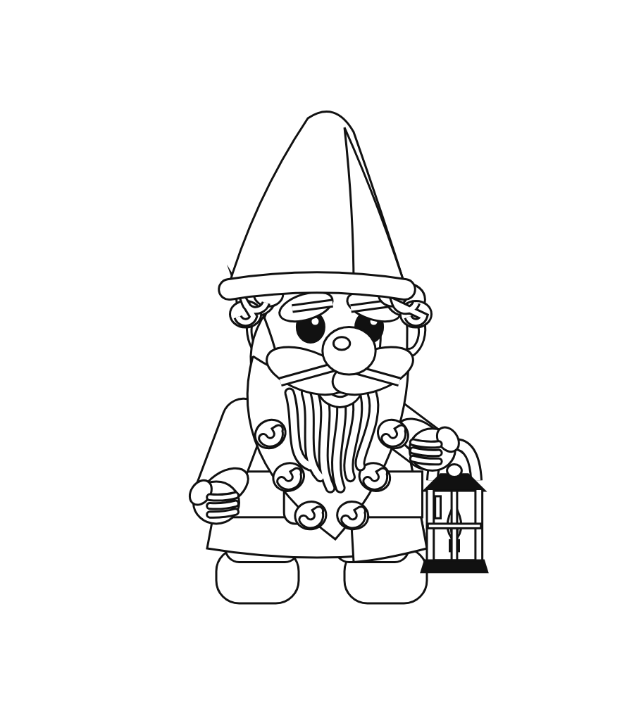
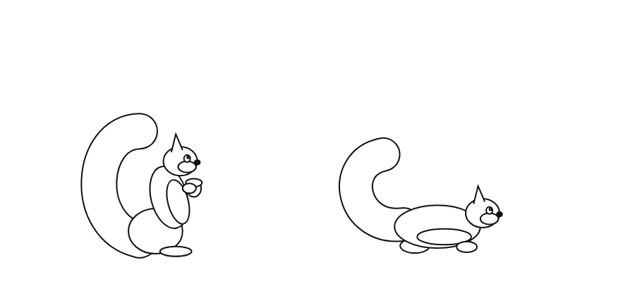
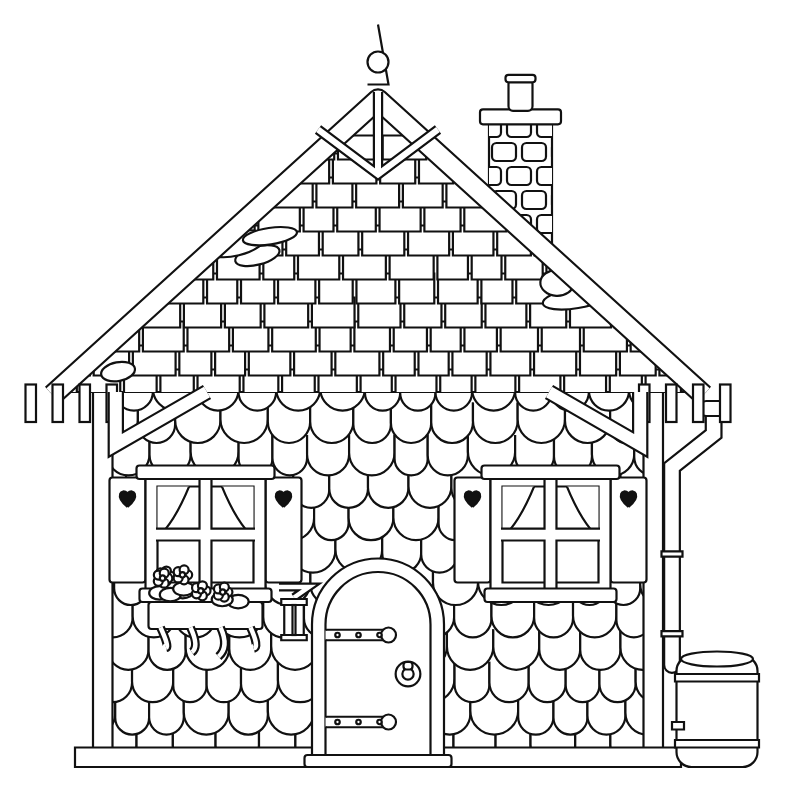
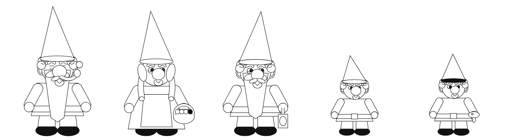
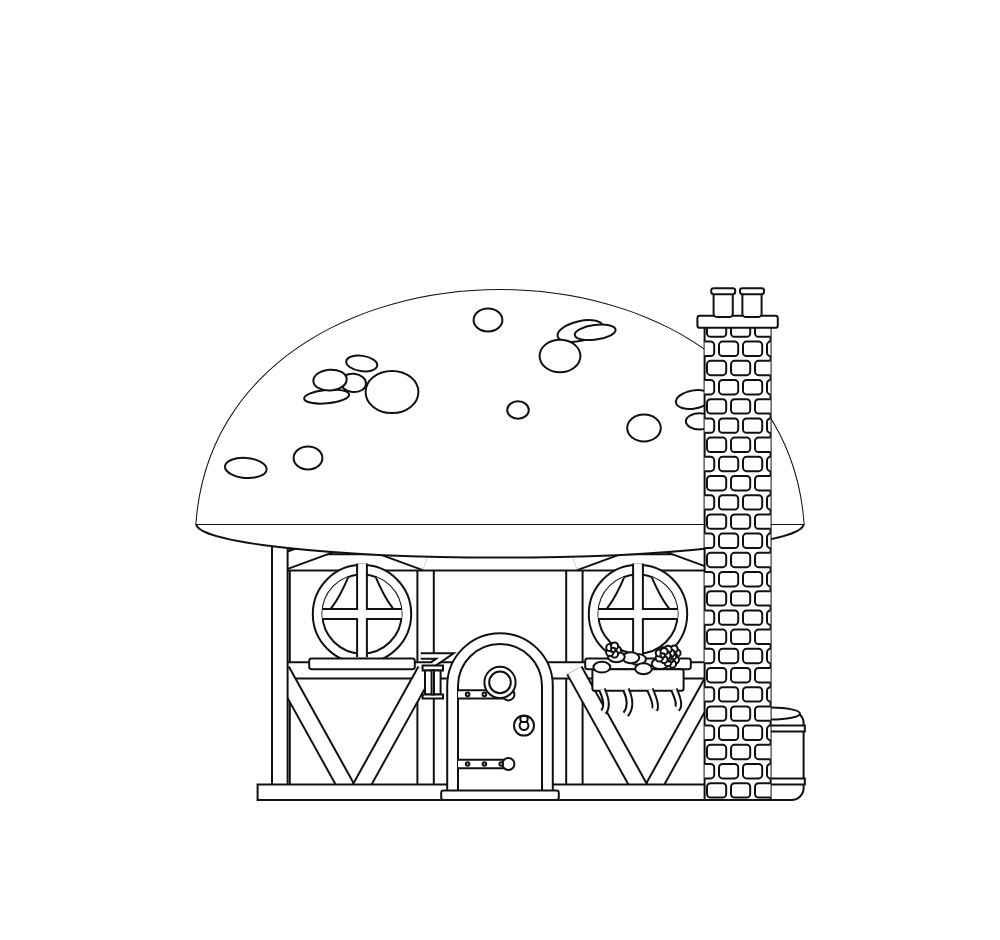
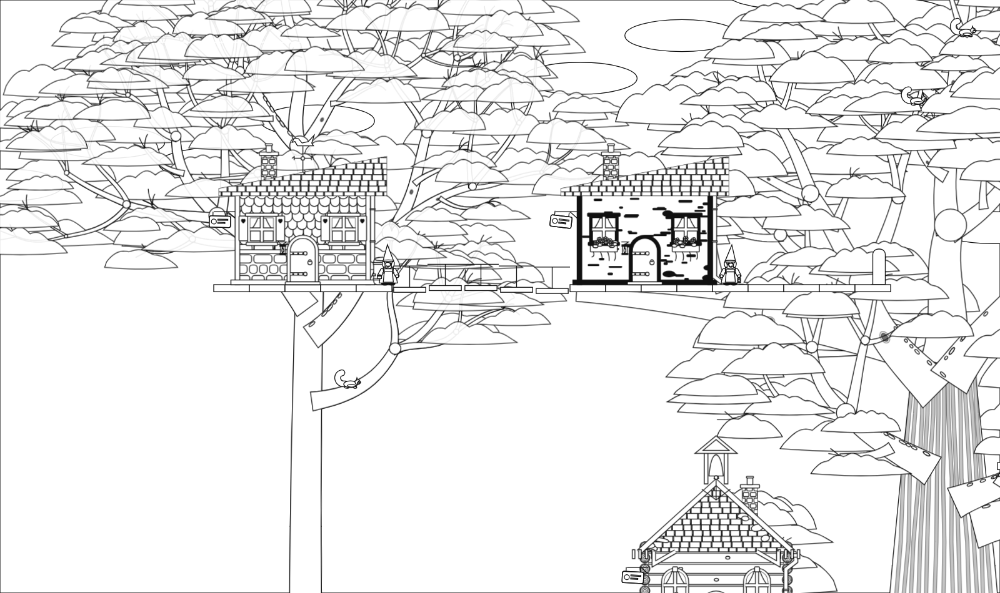
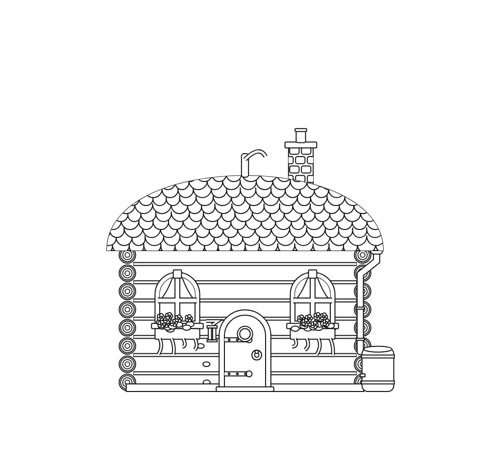
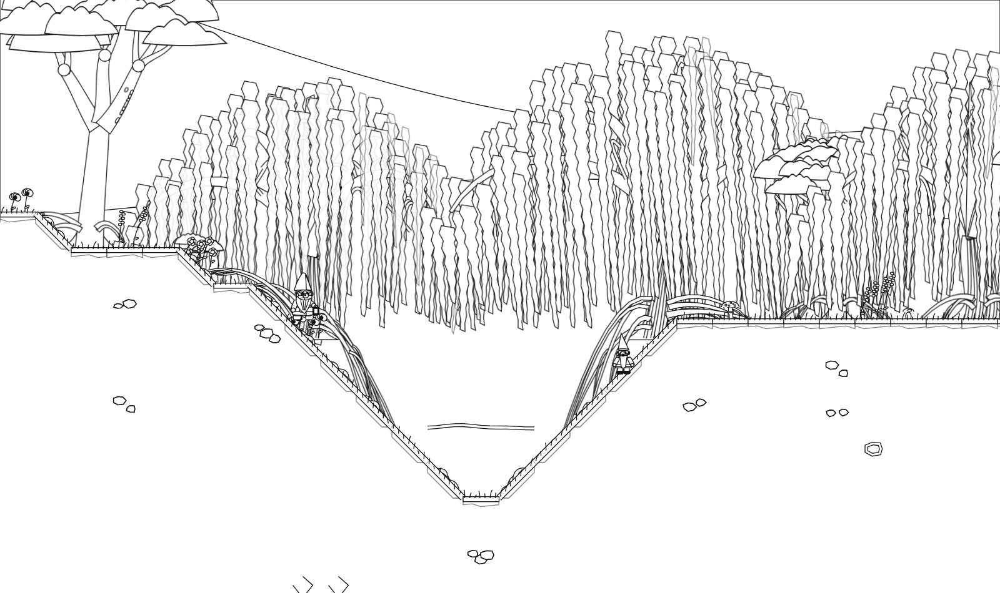
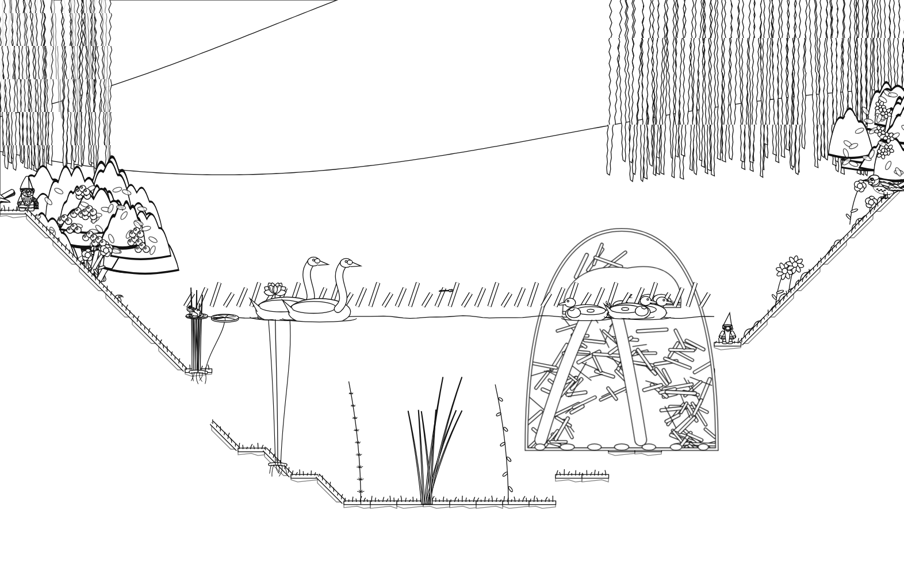

← back to Gnome world · the booklet, on a screen; printed, twelve half-letter pages (print it two-sided, or as a folded zine)
GNOME
WORLD

1THANK YOU
Thank you for playing Gnome World. Please read this booklet before you set out, and keep it nearby: there is a lot of world down there.
THE STORY
Deep under a hill lives a village of gnomes. Above them grow great trees with little houses in their branches; beside them run a creek, a stream and a river, where the beavers are always busy.
You are a gnome of the village, with a lantern and a pick. Somewhere in the world are a diving gear, a tree-climbing pack and two diggers, and in the rock, hundreds of gems. Find them all!

CONTENTS
2 · Controls 3 · Moving about 4 · Things to find 5 · The world 6 · The great trees 7 · Friends and neighbours 8 · The village 9 · Hints 10–11 · Coloring pages
2CONTROLS
| ←→ or AD | Run. |
| ↑ or W | Jump. On a ladder or in a tunnel, climb. |
| ↓ or S | Dig down. On a slope, slide! |
| X ⛏️ | Dig the way you face (hold a direction to choose). |
| B 🪵 | Build: a plank ahead, a bridge across, or a ladder up out of a pit. |
| M 🗺️ | The map of the whole world. |
| space ⏸ | Pause. |
| F | Frame times, for the curious. |
| 💾 📂 | Save your world to a file, just as it is; load it back any day. |
| 🔄 | Restart this world from the beginning (it asks first). |
3MOVING ABOUT
- Digging. Push into the ground to dig it. Soil and sand go quickly, clay and sandstone slowly, shale slowest. Limestone and granite will not budge without a digger.
- Climbing. In any tunnel you dig, you can climb any way. Digging along puts in a timber frame; digging up or down, a ladder.
- Sliding. Hold ↓ on a slope and down you go, faster and faster!
- Swimming. In water you float and swim. Hold ↓ to dive, but watch your bubbles: they are your breath.
- Building. 🪵 at the edge of a pit lays a plank; again and again, a bridge.
4THINGS TO FIND
🤿 THE DIVING GEAR
Breathe under water as long as you like. It waits down in the village.
🧗 THE TREE-CLIMBING PACK
Climb any big tree like a squirrel, ladder or no ladder. It waits in one of the tree houses.
⛏️ THE GOOD DIGGER
Tough ground goes faster, and limestone and granite give way. It leans in a workshop, past the river.
⚒️ THE SUPER DIGGER
Three times as fast, through anything, even the bedrock at the bottom of the world. It lies deep in a cave in the limestone: take the good digger.
💎 GEMS
They glitter in the rock, five colors of them. Dig them out. Some lie loose in caves and flooded tunnels. The 💎 at the top counts the ones you have found and all the world holds. Find the very last one, and there is a party!
5THE WORLD
The world is sixteen screens wide and eight deep, from the deep rock up to the treetops.
WATER IN THE GROUND
The line under your hearts says what is under your feet, how hard it digs, and how wet it is. Rain soaks down into the soil and stone; the blue shows how full the ground is. It sinks slowly, faster where roots go, until it stands on clay or shale. A bowl of clay holds a pond under the ground.
RIVERS
A creek, a stream and a river, each with sloping banks. The beavers' dams raise the water, and the water in the ground beside it. Water plants grow on the beds, reeds and bulrushes in the shallows, and lily pads float on top, some with a pink lotus flower.

6THE GREAT TREES
Climb a great tree's ladders, or the stair inside the stair tree's trunk, out along its limbs and across the rope bridges. Walk in at a tree house door to look inside.

THE SIXTEEN STYLES
Oak Bungalow Casa Quercina
Acorn Cottage Casula Glandis
Owl's Watch Specula Noctuae
Moss Gable Tectum Muscosum
Pinecone Villa Villa Pinea
Thatch Nook Tugurium Stramineum
Star Gazer Speculum Stellarum
Bell Loft Turris Campanae
Honey Hut Casa Mellifera
Weathervane Workshop Officina Ventorum
Ivy Porch House Domus Hederacea
Lantern Library Bibliotheca Silvestris
Fern Cabin Casula Filicum
Birch Bower Umbraculum Betulae
Toadstool Tower Turricula Boleti
7FRIENDS AND NEIGHBOURS

THE VILLAGERS
Gnomes, gnome wives and children live all over the world. Stop beside one and they will tell you something: about their home, the animals, the things to find. No two say the same thing!
THE BEAVERS
A beaver gnaws a tree until it falls, cuts it up a log at a time, each branch's twigs before the branch, and carries the logs to its dam, one by one.
THE WILD ONES
Frogs sit on the lily pads and croak; come too close and, plop, into the water. Dragonflies dart over the rivers, butterflies and bumblebees visit the flowers. Sparrows and robins hop on the grass, blue jays sit in the branches, hawks circle high above. Ducks and swans swim on the water. They are all shy!
8THE VILLAGE
A door on the hill and a ladder down lead to the gnomes' village: kitchens, bedrooms, a library, a workshop, each with its things. Chimneys carry the smoke up, light shafts bring the sun down, air shafts keep it fresh.
Some rooms are deep enough to flood. The gnomes keep fish in those.

9HINTS
COLOR ME IN!


COLOR ME IN!

GNOME WORLD · hazeljs-examples · by Matthew Hammer
The pictures are inspired by Rien Poortvliet's paintings for Gnomes (Wil Huygen and Rien Poortvliet, 1976); they are our own drawings, and these are the game's own, with the colors taken out.
Code: Apache 2.0 · Words and pictures: CC BY 4.0
MORE TO COLOR
